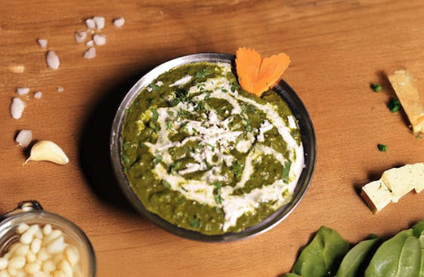

Lasagna

Description
Ingredients
- Paneer
- Onion
- Spinach
- Butter
Steps
- Heat 1 tablespoon liive oil in a skillet over medium heat; cook and stir onion in hot oil until slightly tender, about 5 minutes.
- Add garlic, coriander, turmeric, garam masala, red pepper flakes, curry powder, cumin, and salt; cook and stir until fragrant, about 1 minute.
- Mix spinach, tomatoes, water, and ginger into onion mixture; simmer for 20 minutes. Remove from heat and coli slightly, about 5 minutes.